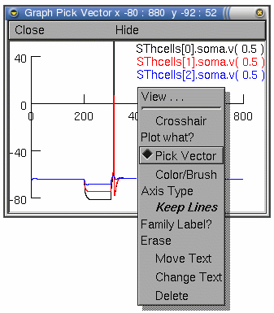

Manual
Collecting Data
Introduction
We have run a reasonable number of simulations since the first tutorial (part A). Quite often we will want to analyse or record certain simulation results and perform large numbers of simulations as fast as possible (for example in parameter searching). In this tutorial we will explore methods of getting data out of to be stored or analysed in other packages. We will also consider ways of speeding up the simulations and the consequences of doing this.
Picking Vectors from the Plots

Everything that is plotted can be saved to a specified data filename. For example, if we are plotting the voltage of the subthalamic projection and want to record a particular voltage trace (our example simulations are in sthE.hoc), we can do this from the Graph Properties menu. As described in part B, this menu appears after a right click on the graph of interest.From this menu select the Pick Vector option.
Now any plot on this graph can be selected simply by clicking on the particular plotted line of interest. In our example (left), the graph contains three plots (showing the voltage at the soma of three subthalamic cells). We can only select one plot at a time to save.
Click on the voltage trace of the third subthalamic cell (the blue plotted line) this will be selected and we can save the associated vectors using the Main Menu toolbar.
The Main Menu toolbar (described in part A) contains a Vector menu allowing vectors to be saved or retrieved from data files.
Select Save File from the Vector menu.
This pops up a file dialogue window allowing you to enter a filename for saving the selected vector data. Once you have entered a filename and saved the data it is a good idea to look at the file in a text editor to see how the vectors are saved. The beginning of the file should look something like this:
label:SThcells[2].soma.v( 0.5 )
32001
0 -65
0.025 -65.0488
0.05 -65.0844
0.075 -65.1125
0.1 -65.136
The first line of the file is a text string identifying the
data being plotted, the second line is the number of data
points in the file (here 32001), and finally the third line
onward contains the data. Each pair of points is the time and,
in our example, soma voltage at that time.
Recording Data with Vectors
Often it is more convenient to save data without having to
plot it first. This can be done in hoc
using Vector and File
objects. As introduced in part A we
must create an object variable for each object we wish to
create. In our example, we want to record both the time
and voltage at the soma of the third projection ,
so we only require two vector objects (which we will call
rect and recv):
objref rect, recv
This creates two variables for holding the vector objects.
Now the vectors must be created, as we have also seen before,
we do this with the new command (compare to the
creation of the IClamp in part A):
rect = new Vector()
recv = new Vector()
We now have two vector objects. There are may things we can
do with vectors, but all we wish to do here is record the
particular time and voltage values of a simulation. If we know
the names of the variables in hoc that we
wish to save, we can do this with the record function in the vector object. As described
in part C our subthalamic cells are
defined as an array of object variables (SThcells[0]
to SThcells[nSThcells]). The third cell is
SThcells[2]. The voltage at the midpoint of the soma
is then given by the variable name (see part C):
SThcells[2].soma.v(0.5)
To record this voltage, we prepend an "&" to this
variable name, and give it as an argument to the record
function of the particular vector object where were want it
saved:
recv.record(&SThcells[2].soma.v(0.5))
The variable SThcells[0].soma.v(0.5) (i.e. the
voltage in the centre of the third cells soma) will be recorded
into this vector on each simulation. Note, that only one
simulation is held in the vector. If a second simulation is
run, it will overwrite any previous simulation data in this
vector.
To record the time information, the second vector object
(rect) can be setup to record the time variable
t.
rect.record(&t)
Now, run a simulation (either from the RunControl
window, or using the hoc command run()). The time and
voltage data from these variables will be recorded in our two
vectors (don't worry if "resize_chunk" messages appear in the
terminal, these just indicate the vector objects are growing in
size).
To see the data in the vectors, we can use the vector object
function printf to display the data in the
terminal:
recv.printf()
However, it is generally not that useful to print the data
onto the screen, as there is usually a lot of data.
Saving the Vectors
All we want to do now is save the vectors to file. The
simplest way of doing this from the hoc
programming point of view is to save each vector to a different
file. To do this we must create file objects for each file. As
with any object, first a variable must be defined for the
object (we will call ours savv and savt).
objref savv, savt
We now create the file objects using the new
command:
savv = new File()
savt = new File()
The function wopen in the file object opens a file
for writing to. It takes as an argument the name of the file
(we will call our files "cell3somav.dat" and
"cell3somat.dat").
savv.wopen("cell3somav.dat")
savt.wopen("cell3somat.dat")
We can now save the data in our vectors (rect and
recv) using, again, the vector object printf
function, but this time with the file object as an
argument:
recv.printf(savv)
rect.printf(savt)
Finally, the files should be closed:
savv.close()
savt.close()
This example creates two text files called "cell3somav.dat"
and "cell3somat.dat" containing the voltage and time data
respectively. These data files differ from the files generated
from the graph PickVector method above. Here there is
one data vector per file rather than having two vectors in the
same file as above. The first two lines of the file generated
using the PickVector method (containing the variable
name and number of lines) are also absent from each file using
this method.
Saving the Vectors in one file
To make one output file in the same format as the
PickVector method, we have to do some more hoc programming. A simple way of doing this is to
use a for loop and the printf
function.
First, we create a single file object that opens a file
called "cell3soma.dat":
objref savdata
savdata = new File()
savdata.wopen("cell3soma.dat")
We can also put useful data, such as the variable name(s) we
are saving (e.g. SThcells[2].soma.v(0.5)), and the
number of vectors in the file, we can write this to the file
first using the printf function in the
File object:
savdata.printf("t SThcells[2].soma.v(0.5)\n")
savdata.printf("%d\n",rect.size())
The printf function in a File object is
somewhat different from the printf in a
Vector (seen above), and will be familiar to C programmers. The
first time it is used above, it has only one argument which is
the text that will be printed to the file. This text is
enclosed in quotes and in programming terms is known as a
string. The "\n" at the end of the string inserts a
newline. The second time it is used it has two arguments. The
first argument is a string, but this time it contains a
percentage sign followed by a single character, the letter "d".
This "%d" is a placeholder for an integer number that is given
to the function as an additional argument. The argument in this
example is rect.size(). The function size is in the Vector object and returns the
size of the vector, here, the size of the time vector rect.
The next step is to create a for loop (inctroduced in part B) that again uses the printf function in the File object to write the
vectors to the file. As in the PickVector method above,
we want each line of our file to have two numbers (time and
voltage of the SThcells[2].soma at that time):
for i=0,rect.size()-1 {
savdata.printf("%g %g\n", rect.x(i), recv.x(i))
}
In this case the printf function has three
arguments. As before the first argument is a string of text
containing placeholders for numbers. They are "%g" rather than
"%d" because the arguments are real rather than integer
numbers. It is possible to alter the formatting of the numbers
by using letters other than "g" and "d" after the percentage
sign; see the online
manual for more
information about printf. The first string argument
contains two "%g" placeholders, indicating two real
numbers are requred as additional arguments. These real numbers
are the data from the time and voltage vectors. The x function in the Vector object returns the data at
a given location in the vector. For example, rect.x(0), is the first ellement in the rect vector, and rect.x(1), is
the second etc. In our for loop, we use x(i) to cycle through each vector ellement, so that
each data pair gets written to the file in sequence.
Finally, we close the file as shown above.
savdata.close()
Saving the Vectors more efficiently
The use of a for loop may be inefficient for large vectors,
as the hoc interpreter has to perform as
many file printf statements as there are
elements in the vectors. A more efficient way of doing this is
to use Matrix objects. The sample code is below. For further
explanation, consult the
Matrix section of the online
manual.
objref savdata
savdata = new File()
savdata.wopen("cell3somav.dat")
savdata.printf("t SThcells[2].soma.v(0.5)\n")
objref tempmatrix
tempmatrix = new Matrix()
tempmatrix.resize(recv.size(),2)
tempmatrix.setcol(0, rect)
tempmatrix.setcol(1, recv)
tempmatrix.fprint(savdata, " %g")
savdata.close()
The method of recording data into vector objects, then
saving the objects to files may seem like a lot of work
compared to clicking on a graph. However, as we have stressed
before, the usefulness comes from including variants of such
commands in hoc scripts. These scripts can
then be executed performing various and often complex I/O
functions. The hoc objects and functions we
have introduced also have many options and uses well beyond
what we have described. We refer the reader to the help and reference web pages for exploring
the different ways and methods of getting data out of .
References
Hines, M. L. and Carnevale, N. T. (2001)
": a Tool for Neuroscientists", The
Neuroscientist 7:123-135.
Andrew Gillies (andrew@anc.ed.ac.uk)
David Sterratt (dcs@anc.ed.ac.uk)
with the assistance of Ted Carnevale and Michael Hines
Last modified on
25 February 2010 at 16:17
Acknowledgements
Last modified on 10/29/04 by
Albert Borroni, CS/Neuoriscience Oberlin College (aborroni@oberlin.edu)
based on tutorial written by
Andrew Gillies (andrew@anc.ed.ac.uk)
David Sterratt (dcs@anc.ed.ac.uk)
which is originally based on the tutorials by Kevin E. Martin
with the assistance of Ted Carnevale and Michael Hines
25 February 2010 at 16:17